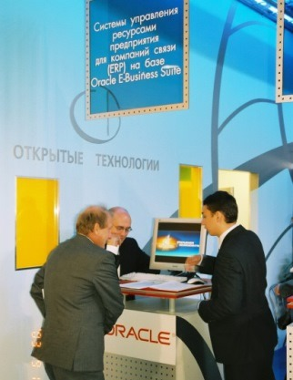

20 лет ИТ-рынка России: как отрасль
стала цивилизованной
Начало XXI века ознаменовалось бурным ростом доли ИКТ-сектора в экономике России. По данным Росстата, учитывающего 2 его составляющие – «связь» и «информационно-вычислительное обслуживание», но не берущего в расчет дистрибуцию оборудования и программного обеспечения, в 2000 г. объем производства в этой сфере составлял более $169 млрд, в 2003 г. увеличился до i460 млрд, а по итогам 2004 г. – до $550 млрд. Таким образом, всего за 4 года российский ИКТ-рынок вырос почти в 3,3 раза. Доминирующую роль в секторе ИКТ играли услуги связи – на их долю приходилось около 90% объема рынка.
В указанный период темпы развития ИКТ-рынка существенно обгоняли рост ВВП страны в целом. Постепенно увеличивалась и доля ИКТ-продукции в ВВП – от 1,9% в 2000 г. до 4,9% в 2004 г.
Согласно данным CNews Analytics в период с 2001 по 2004 г. совокупный оборот 100 крупнейших ИТ-компаний России увеличился в 2,2 раза с i97 млрд до i215 млрд. В числе лидеров этого списка – Merlion, НКК, «Открытые технологии», «Техносерв», ЛАНИТ, IBS, Kraftway.
Структура игроков российского ИТ-рынка в этот период постепенно менялась – на смену продавцам оборудования начали приходить компании, предлагающие целый комплекс разнообразных услуг. Если по итогам 2002 г. в списке 100 крупнейших компаний 40% составляли интеграторы, 16% – разработчики ПО и 12% – дистрибьюторы компьютерной техники, то к 2004 г. доля разработчиков ПО осталась неизменной, а доля интеграторов увеличилась до 49% в основном за счет сокращения до 5% доли дистрибьюторов техники.
«В этот период ИТ из чисто затратных статей бюджета компании постепенно превращаются в направления, генерирующие прибыль или напрямую влияющие на нее. Деятельность компаний теперь настолько плотно связана с использованием ИТ, что начинает в полной мере зависеть от работоспособности систем, – вспоминает президент компании «Открытые Технологии» Сергей Калин. – Наши заказчики все больше начинают ценить «комплексные решения», а не просто набор отдельных продуктов. Наиболее востребованы те направления, в которых высока доля услуг, например, внедрение ERP-систем, управленческий консалтинг и информационная безопасность».
Драйверы роста
Начало XXI века ознаменовалось ростом интереса руководства страны к развитию сферы ИКТ. 13 апреля 2001 г. президент Владимир Путин встретился с представителями отрасли. «Эту встреча стала неким импульсом к развитию сферы высоких технологий, – утверждает Сергей Калин. – Именно после нее стали активно разрабатываться и приниматься законы, имеющие большое значение для ИТ-отрасли: проект Федерального закона «О правовом регулировании оказания Интернет-услуг», закон №1-ФЗ «Об электронной цифровой подписи», №126-ФЗ «О связи» и т.д.».
Летом 2001 г. была утверждена Федеральная целевая программа (ФЦП) «Электронная Россия», которая должна была на многие годы стать одним из основных драйверов развития ИКТ-отрасли в стране. Начались работы по преодолению цифрового неравенства между российскими регионами, создавались пункты коллективного доступа в Интернет, в российские школы массово поставлялись компьютеры, тестировалась возможность проведения электронных государственных закупок. Одновременно подобные программы информатизации стали появляться и в российских регионах.
В августе 2001 г. началась реализация ФЦП «Глобальная навигационная система» (ГЛОНАСС), предполагавшая покрытие сигналом всей территории Земли.
В конце 2004 г. увидела свет разработанная Мининформсвязи «Концепция развития рынка информационных технологий в Российской Федерации на период до 2010 г.». Приблизительно в то же время был дан старт нескольким крупным государственным ИТ-проектам: внедрения паспортно-визовых документов нового поколения (биометрических паспортов), информатизации судебной системы.
Важной особенностью российского рынка ИКТ начала XXI века стало стремительное развитие сотовой связи. Резкое удешевление подобных услуг после кризиса 1998 г. и появление в 2001 г. сетей стандарта GPRS привели к лавинообразному росту спроса на услуги мобильных операторов. Если в 2000 г. в России было зарегистрировано около 3,3 млн SIM-карт, то уже в 2001 г. их число удвоилось, в 2002 г число мобильных номеров превысило число стационарных и достигло показателя 17,6 млн, а к 2004 г. составило 73,7 млн.
Одновременно стремительно рос и уровень проникновения Интернета. Если в 2001 г. по данным IDC в России было 3,8 млн индивидуальных пользователей, которые выходили в Интернет по меньшей мере один раз в месяц, то к 2005 г. – уже 21,7 млн.
Развитие рынка ИКТ стимулировало появление целого ряда общественных организаций, объединяющих компании, работающие в сфере информационных технологий. В сентябре 1999 г. в Санкт-Петербурге создается консорциум «Форт-Росс», впоследствии переименованный в «Руссофт» и объединяющий разработчиков программного обеспечения, поставляемого на экспорт. Следом за ним в ноябре 2001 г. начинает свою работу Ассоциация предприятий компьютерных и информационных технологий (АП КИТ), в которую кроме российских компаний входят и представители иностранных корпораций – 3COM, Cisco, Hewlett-Packard, IBM, Intel, Microsoft, Oracle и другие.
Основные итоги
Закономерным итогом развития рынка в этот период стало появление у заказчиков комплексных стратегических подходов к формированию корпоративной ИТ-инфраструктуры. На смену политике создания решений, способных решать узкоспециализированные задачи и не требующих крупных капиталовложений, постепенно приходило понимание роли ИКТ в процессе создания эффективного бизнеса и осознание необходимости инвестиций в самые современные решения.
«Плотно работая с заказчиками в этот период, мы заметили тенденцию к смене приоритетов – компании от решения сиюминутных задач все чаще стали переходить к реализации долгосрочных планов. Скорее всего, это было связано с тем, что у организаций появилась возможность осуществлять стратегические инвестиции в развитие информационной инфраструктуры, – говорит Сергей Калин. – Вместе с тем усложнялись и укрупнялись проекты, они становились многоэтапными, с большой долей интеграции».
Крупные государственные и коммерческие предприятия стали все больше внимания уделять вопросам планирования сетей, создания аппаратных комплексов для обработки и хранения данных, внедрению комплексных ERP-решений и систем электронного документооборота, а также обеспечения информационной безопасности. Как следствие, возникла необходимость в их технической поддержке, что заставило задуматься о возможности передачи подобных работ на аутсорсинг.
Изменение требований заказчиков способствовало бурному росту российских ИТ-компаний. Так, в 2002 г. крупнейший российский производитель компьютерной техники Kraftway приступает к созданию собственного производственно-логистического центра в г. Обнинск, а в 2003 г. запускает новые производственные мощности в г. Москве. Компания начинает производство серверов на платформе Intel, а также расширяет спектр решений в области систем хранения данных корпоративного уровня. К 2005 г. Kraftway заключает необходимые OEM-соглашения с мировыми вендорами, такими как Bull, Hitachi Data Systems, SGI.
«Будучи производителем и поставщиком вертикально законченных инфраструктурных решений, поддерживающих все, вплоть до приложений, мы обязаны сопровождать и поддерживать работоспособность этих решений. Соответственно, не можем обойти стороной системы хранения данных. Поэтому мы вышли на контракт с Hitachi Data Systems, – рассказывал в интервью CNews Алексей Кудрявцев, генеральный директор компании Kraftway. – SGI – это перспективное направление. У этой компании очень хорошая позиция не только в производстве высокоскоростных компьютеров и масштабируемых архитектурах, но и в производстве графических станций. Мне кажется, что российская инновационная киноиндустрия имеет все шансы развиваться в ближайшие годы темпами, в десятки раз опережающими рынок».
В это же время «Информзащита» получила первые сертификаты ФАПСИ на свои продукты, предназначенные для защиты государственной тайны. Одновременно компания расширяла список разработок, предназначенных для защиты ИТ-систем от несанкционированного доступа, шифрования как на аппаратном, так и на программном уровне и получила целый ряд партнерских сертификатов от ведущих мировых производителей решений в сфере ИБ, таких как Check Point, Clearswift.
«2004 год был отмечен ростом понимания проблемы обеспечения безопасности как увязанной со всем бизнесом и жизнедеятельностью компании, – рассказывал в интервью CNews Петр Ефимов, президент компании «Информзащита». – Отсюда и более ответственный и всеобъемлющий подход к решениям в сфере ИБ. Крупных компаний, которые занимаются построением лоскутных систем защиты, практически не осталось». Кроме того, заказчики стали все больше внимания уделять оценке эффективности внедряемых решений, что, по мнению Петра Ефимова, положительно сказалось на их качестве – «исполнителям приходится больше внимания уделять построению оптимальных систем».
Расширяет бизнес и выпускает все новые и новые продукты один из самых успешных российских разработчиков ПО ABBYY. На рынок выходят все новые решения компании – ABBYY Form Reader – система ввода форм, заполненных от руки или распечатанных на принтере, с применением технологии интеллектуального распознавания символов – ICR (Intelligent Character Recognition), инструмент для обработки гибких форм ABBYY FlexiCapture Studio, программа для работы с PDF-файлами ABBYY PDF Transformer. Компания выходит на новые рынки путем заключения партнерских соглашений с SDB Pte, Epson America, получает статус Microsoft Gold Certified partner. В 2004 г. появляются подразделения ABBYY Россия и ABBYY Кипр.
«Мы создаем рабочие места для очень высококвалифицированного персонала, обеспечиваем их конкурентной зарплатой, и, в конечном итоге, создаем продукт, который конкурентоспособен на внешних рынках, – говорил в интервью CNews Сергей Андреев, генеральный директор компании ABBYY. – Большинство экспертов отрасли считает наши продукты самыми передовыми на мировом рынке. Каждый месяц наши программы получают новые звания и награды в зарубежных тестах и сравнениях самых стран. И эта область требует значительных вложений человеческого труда».
Растет спрос на решения Корпорации «Парус» со стороны крупных корпоративных заказчиков, таких как компании «Лукойл», ТНК, «Связьинформ», СУЭК, «Сибур», а также предприятия военно-промышленного комплекса «Туполев», «Сплав», «ОКБ Сухого». Интерес к комплексным решениям начинают проявлять и государственные заказчики. В Эвенкийском автономном округе внедряется система управления финансовыми и материальными потоками округа, включающая всех участников бюджетного процесса, в Московской области создается единая автоматизированная система бухгалтерского учета органов исполнительной власти.
«Административная реформа, изменения в бюджетной политике страны и принятие закона о местном самоуправлении требуют модернизации существующих информационных технологий и способствуют большей востребованности новых программных продуктов, – рассказывал Александр Карпачев, президент Корпорации «Парус». – За годы активной работы ФЦП «Электронная Россия» представители органов власти получили немалый опыт использования ИТ-решений в госуправлении».
В начале 2000-х «Открытые Технологии» начинают заниматься проектированием, поставкой и запуском в эксплуатацию суперкомпьютеров. Одним из первых успешных проектов становится проект по построению суперкомпьютера для МСЦ РАН. Это был самый быстрый на тот момент суперкомпьютер в стране. Он вошел в первый рейтинг ТОП-50 суперкомпьютеров СНГ и занял в нем 2-е место, лидировал еще 4 рейтинга подряд, а в 2009 г. поднялся на 1-е место.

Путешествие флага «Открытых технологий» на Килиманджаро в 2002 г.
В 2004 г. эта же компания реализует один из крупнейших на тот период проектов – внедряет ERP-систему на базе Oracle e-Business Suite в «Связьинвесте». Решение охватывает всю Россию, над ним работает более 330 консультантов. «Функционал внедряемой системы включал в себя бизнес-процессы управления финансовыми средствами, персоналом и логистикой. Параллельно велись работы по построению технической архитектуры, необходимой для запуска и последующей эксплуатации ERP, обучение пользователей, осуществлялась поддержка системы, – рассказывает Сергей Калин. – В результате проекта были унифицированы бизнес-процессы во всех МРК, компании перешли на использование единых стандартов для ведения разнообразной документации и сбора поступающей информации, более легким стал финансовый и кадровый учет».
Одновременно «Открытые Технологии» создают подразделения по внедрению комплексных ERP-систем и по реализации заказных решений, открывают практики по корпоративным порталам и по Identity Management.

«Открытые технологии» на выставке Инфоком-2003
Многие ИТ-компании в этот период начинают открывать региональные представительства и расширять дилерскую сеть. IBS выходит на рынки США, Монголии и Украины. В 2004 г. появляются подразделения ABBYY Россия и ABBYY Кипр. Открытые Технологии не исключение. В этот период у системного интегратора идет активная региональная экспансия. Компания открывает 11 филиалов по всей России. С самого начала представительства занимаются не только проектной деятельностью, но и оказанием сервисных услуг, что весьма востребовано на региональных рынках.
Таким образом, в начале 2000-х гг. российский ИТ-рынок перешел от стадии массовых часто хаотичных поставок оборудования и программного обеспечения к этапу комплексного, стратегически выверенного ИТ-оснащения государственных и коммерческих предприятий современными решениями, способствующими повышению их эффективности и конкурентоспособности. И уже к 2005 г. он стал по-настоящему цивилизованным.